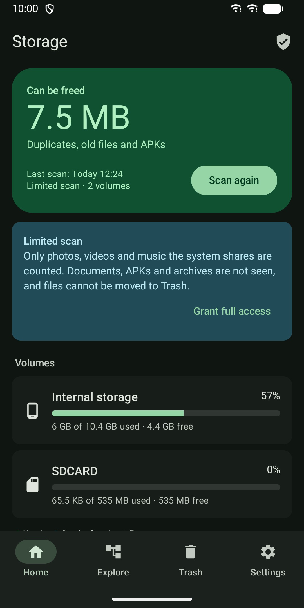
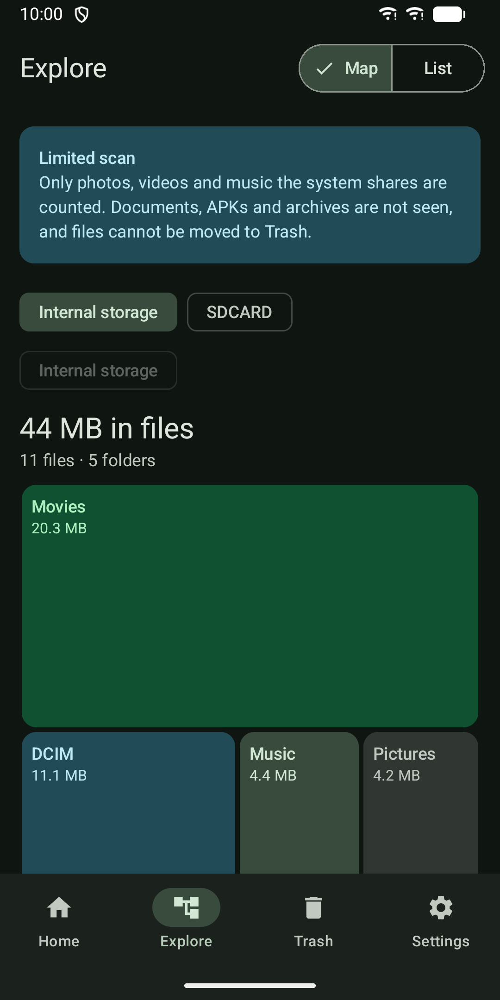
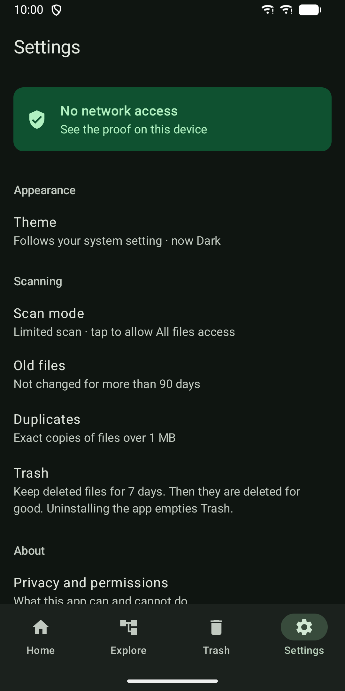

Große Dateien, Duplikate und alten Kram finden und sicher Platz schaffen.

Screenshots
Ein genauerer Blick
Speicheranalyse: Große Dateien screenshot 1Speicheranalyse: Große Dateien screenshot 2
Speicheranalyse: Große Dateien screenshot 3
Speicheranalyse: Große Dateien screenshot 4

Speicheranalyse: Große Dateien screenshot 5
Speicheranalyse: Große Dateien screenshot 6

Speicheranalyse: Große Dateien screenshot 7
Funktionen
Was sie kann
Sieh, was dein Handy füllt, und schaffe Platz – komplett offline.
Speicheranalyse fragt nicht nach der Internet-Berechtigung. Android lässt die App also gar nicht online gehen. Keine Werbung, keine Analyse, keine Absturzberichte, kein Konto, keine Cloud. Alles, was die App findet, bleibt auf deinem Handy. Du kannst das selbst prüfen: Die App zeigt ihre Netzwerk-Berechtigungen, live von Android ausgelesen, auf ihrer Datenschutz-Seite.
01
Was die app findet
Große Dateien, nach Größe sortiert, mit Filtern für Bilder, Videos, Audio, Dokumente, APKs und Archive.
Exakte Duplikate: Dateien über 1 MB mit gleicher Größe werden per SHA-256-Prüfsumme verglichen. So erscheinen nur echte Kopien. Die neueste Kopie ist vorausgewählt zum Behalten, und mindestens eine Kopie bleibt immer erhalten.
Alte Dateien, die seit über 90 Tagen nicht geändert wurden, sortiert nach Downloads, Screenshots, WhatsApp-Medien, APK-Installern und sonstigen Dateien.
Ordnergrößen als Karte zum Durchtippen, mit Listenansicht und Pfadleiste zum Zurückgehen.
Speicher pro App (App, Daten und Cache), mit Abkürzung zu den Systemeinstellungen der App, um den Cache zu leeren.
02
Sicher löschen
Gelöschte Dateien landen zuerst im Papierkorb der App. Sofort rückgängig machen oder 7 Tage lang wiederherstellen. Danach werden sie endgültig gelöscht. Dateien werden verschoben, nicht kopiert, das geht auch bei großen Videos schnell. Ordner werden nie gelöscht.
03
Du behältst die kontrolle
Scans laufen nur, wenn du auf Scannen tippst, nie im Hintergrund.
Der volle Modus nutzt den Zugriff auf alle Dateien und prüft jeden Ordner im internen Speicher und auf der SD-Karte.
Lieber nicht? Der eingeschränkte Modus sieht nur Fotos, Videos und Musik, die Android mit Apps teilt.
Der Nutzungsdatenzugriff wird nur auf der Apps-Seite abgefragt, und es werden nur App-Größen gelesen.
04
Ausserdem
Hinweis: Die App ist nur auf Englisch verfügbar. Beim Deinstallieren wird auch ihr Papierkorb geleert. Stelle Dateien, die du behalten willst, vorher wieder her.
Widget für den Startbildschirm mit belegtem Speicher, freizugebendem Platz und letztem Scan.
Helles und dunkles Design nach deiner Systemeinstellung.
Layouts für Handy und Tablet.
Funktioniert mit Screenreadern.
Speicheranalyse: Große Dateien
Große Dateien, Duplikate und alten Kram finden und sicher Platz schaffen.